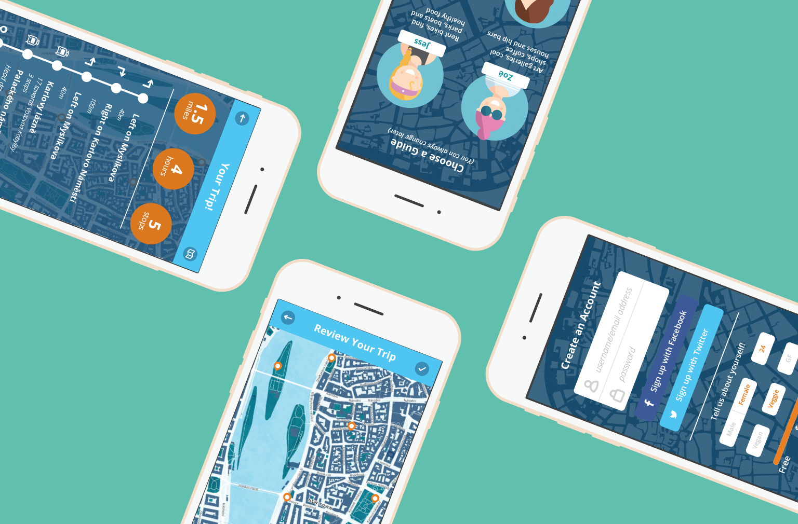
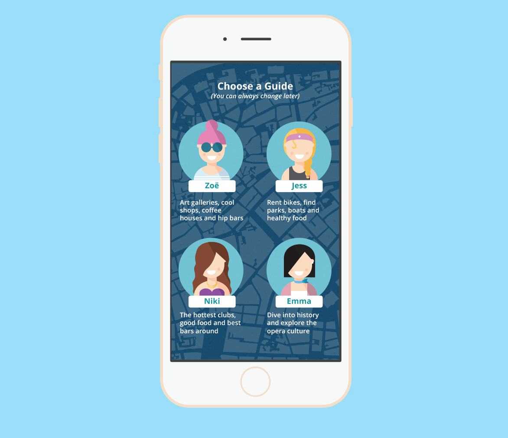
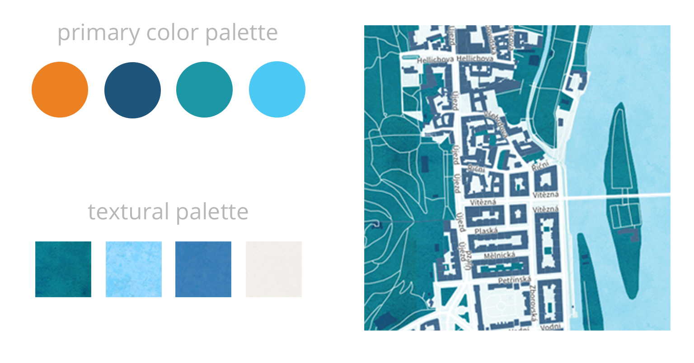

The Problem
How can every tourist have a unique and engaging experience in a new city?

The What
The Locals is a one-stop travel guide for a specific city. Each of the four guides is crafted to recommend unique and exciting excursions based on their (and the user's) interests.
The Difference
Using saved maps, access detailed information about each point on your tour without the need for internet connection. Easily find the nearest public transportation stops, see reviews of surrounding stops, photos and even other reccommended locations nearby.


The Process
Along with ideation and development of the idea, I created all of the visual elements and the UI. I was also able to create a fully functional map in the aesthtic the team wanted using Map.Css and the accompanying Mapbox development platform.